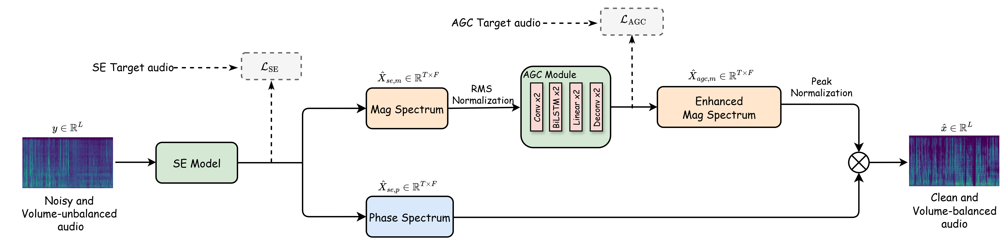

LibriAGC
Input
MP-SENet (Orig)
MP-SENet (Orig) + pyagc
MP-SENet (SE)
MP-SENet (SE) + pyagc
MP-SENet (AGC)
SE-AGCNet
An end-to-end framework for joint speech enhancement and loudness control in meeting scenarios with large volume variations.
Conventional audio pipelines usually treat speech enhancement and automatic gain control as separate modules. This can amplify background noise when AGC is applied before enhancement, or suppress quiet speech when enhancement is applied before AGC. SE-AGCNet jointly optimizes both tasks end-to-end for meeting scenarios, preserving low-volume speech while controlling loudness. The project also includes SE-AGC-DataGen and loudness-aware evaluation with integrated LUFS, short-term LUFS, and LRA.

Each row compares the noisy input, MP-SENet baselines, their pyagc post-processing variants, and SE-AGCNet.
Code, training scripts, inference scripts, pyagc, and data generation utilities are available in the GitHub repository. Pre-trained model and dataset links are documented in the repository README.
Contact: pmhuan1212@gmail.com or aseschng@ntu.edu.sg.